<!DOCTYPE html>
<html>
    <head>
        <title>튀어나와요 동물의 숲</title>
        <meta charset="utf-8" />
        <style>
            body{
                margin: 0px;
                background-image: url("images/ehdtnv.jpg");
                background-size: cover;
                background-repeat: no-repeat;
                background-color: rgb(0, 0, 0);
                background-position: 15% 15%;
            }
            ul{
                padding: 0px;
            }
            
            header ul{
                padding: 0px;
                margin: 10px 0px; /*상하 좌우*/
            }
            nav>ul>li{
                float: left;
                list-style: none;
                padding-left: 0px;
                padding-right: 5px;
            }
            header>h1{
                float: left;
                margin: 0px;
            }
            ul{
                text-align: center;
            }
            header li{
                display: inline-block;
                margin: 20px;
            }
            .card{
                width: 310px;
                height: 570px;
                background-color: rgba(244, 250, 233, 0.589);
                border-right: solid 2px #ddd;
                border-bottom: solid 2px #ddd;
                margin: 0px 20px 20px 0px;
                float: left;
            }
            .image_part>div{
                background-color: rgb(31, 27, 27);
                color: white;
                display: block;
                display: inline-block;
                padding: 5px;
                position: static;
                position: absolute;
                bottom: 0px;
                left: 0px;
            }
            .image_part{
                position: relative;
            }
            .image_part img{
                display: block;
                margin: 0px auto;
            }
            .card h2{
                margin: 0px;
            }
            .date{
                margin: 8px 0px;
            }
            .info_part h2{
                font-size: 20px;
            }
            .info_part{
                font-size: 15px;
                padding: 30px;
            }
            footer img{
                margin-left: 5px;
                margin-right: 5px;
            }
            .font_bold{
                font-weight: bold;
            }
            footer div{
                margin-top: 10px;
                margin-bottom: 10px;
            }
            footer{
                background-color: rgb(255, 255, 255);
                color: #ccc;
                padding: 50px;
                float: left;
            }
            .short_line{
                width: 30px;
                height: 0px;
                border-bottom: solid 1px gray;
                margin: 5px 0px; /*상하 좌우*/
            }
            #i_list{
                float: left;
            }
            
            footer{
                background-color: rgb(255, 255, 255);
                color: #ccc;
                padding: 30px;
                min-width: 1800px;
            }
            #wrap{
                min-width: 1200px;
                max-width: 1920px;
                margin-left: auto;
                margin-right: auto;
            }
            footer>li>img{
                padding-bottom: 10px;
            }
        </style>
    </head>
</html>
<body>
    <div id="wrap">
        <header>
            <h1></h1>
            <nav>
                    <ul>
                        <li>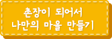</li>
                        <li>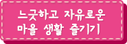</li>
                        <li>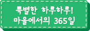</li>
                        <li>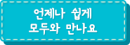</li>
                        <div class="clear"></div>
                    </ul>
                </nav>
            <div class="clear"></div>
        </header>
            <div id="content">
                    <div class="card">
                        <div class="image_part">
                                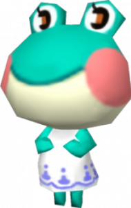
                                <div>개구리 주민</div>
                            </div>
                            <div class="info_part">
                                <h2>레이니</h2>
                                <div class="date">No.218</div>
                                <div class="long_line"></div>
                                <p>설탕 1개와 우유 약간을 넣은 모카 커피를 좋아한다.<br/>
                                    선호하는 노래는 T.K.살사.<br/>
                                    귀여운 스타일을 좋아하고 스포티한 스타일을 싫어한다.<br/>
                                    색상은 초록색, 말버릇은 그래요.<br/>
                                    좋아하는 말은 비온 뒤에 땅이 굳는다.</p>
                                <div class="long_line"></div>
                        </div>
                    </div>
                    <div class="card">
                            <div class="image_part">
                                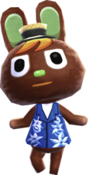
                                <div>토끼 주민</div>
                            </div>
                            <div class="info_part">
                                <h2>산토스</h2>
                                <div class="date">No.390</div>
                                <div class="long_line"></div>
                                <p>블렌드 원두에 우유와 설탕을 넣지않은 커피를 좋아한다.<br/>
                                    좋아하는 노래는 동물의 섬.<br/>
                                    현대적인 옷을 좋아하고 화려한 옷은 싫어한다.<br/>
                                    좋아하는 색상은 주홍색, 말버릇은 아미고.<br/>
                                    좋아하는 말은 귀를 장식으로 달고 다닌다.</p>
                                <div class="long_line"></div>
                        </div>
                    </div>
                    <div class="card">
                            <div class="image_part">
                                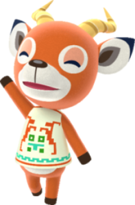
                                <div>사슴 주민</div>
                            </div>
                            <div class="info_part">
                                <h2>피터</h2>
                                <div class="date">No.167</div>
                                <div class="long_line"></div>
                                    <p>설탕3개와 우유를 듬뿍 넣은 모카 커피를 좋아한다.<br/>
                                    테마곡이 알프스의 노래.<br/>
                                    무난한 옷을 좋아하고 강렬한 옷은 싫어한다.<br/>
                                    좋아하는 색상은 베이지색, 말버릇은 우왕.<br/>
                                    좌우명은 사슴일은 아무도 모른다.</p>
                                <div class="long_line"></div>
                        </div>
                    </div>
                    <div class="card">
                            <div class="image_part">
                                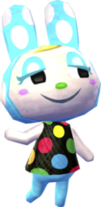
                                <div>토끼 주민</div>
                            </div>
                            <div class="info_part">
                                <h2>프랑소와</h2>
                                <div class="date">No.218</div>
                                <div class="long_line"></div>
                                <p>킬리만자로 원두에 설탕 1개, 우유 약간을 넣은 커피를 좋아한다.<br/>
                                    선호하는 노래는 사랑해.<br/>
                                    4자매 중에 첫째 장래희망은 패션디자이너이고 특기는 자는 척하기.<br/>
                                    좋아하는 색상은 파란색, 말버릇은 쇼봉.<br/>
                                    좋아하는 말은 여동생 마음, 언니는 모른다.</p>
                                <div class="long_line"></div>
                            </div>
                    </div>
                    <div class="card">
                            <div class="image_part">
                                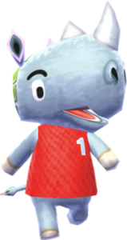
                                <div>코뿔소 주민</div>
                            </div>
                            <div class="info_part">
                                <h2>탱크</h2>
                                <div class="date">No.374</div>
                                <div class="long_line"></div>
                                <p>블루마운틴 원두에 우유,설탕 넣지않은 커피를 좋아한다.<br/>
                                    선호하는 노래는 T.K.트로트.<br/>
                                    로큰롤한 옷을 좋아하고 모던한 옷은 싫어한다.<br/>
                                    좋아하는 색상은 녹색, 말버릇은 아뿔소.<br/>
                                    좋아하는 말은 회색 다리는 회색 마음보다 낫다.</p>
                                <div class="long_line"></div>
                            </div>
                    </div>
                    <div class="card">
                            <div class="image_part">
                                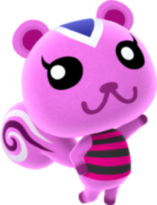
                                <div>다람쥐 주민</div>
                            </div>
                            <div class="info_part">
                                <h2>핑키</h2>
                                <div class="date">No.95</div>
                                <div class="long_line"></div>
                                <p>모카 원두에 우유 보통,설탕 두 조각을 사용한 커피를 좋아한다.<br/>
                                    선호하는 노래는 T.K.살사.<br/>
                                    시리즈의 모든 게임에 개근한 다람쥐이다.<br/>
                                    좋아하는 색상은 분홍색, 말버릇은 거얌.<br/>
                                    좋아하는 말은 다람쥐 쳇바퀴 돌듯 안한다.</p>
                                <div class="long_line"></div>
                            </div>
                    </div>
                    <div class="card">
                            <div class="image_part">
                                
                                <div>개구리 주민</div>
                            </div>
                            <div class="info_part">
                                <h2>철컥</h2>
                                <div class="date">No.366</div>
                                <div class="long_line"></div>
                                <p>블루 마운틴 원두에 우유 보통에,설탕 두 조각을 사용한 커피를 좋아한다.<br/>
                                    선호하는 노래는 가자 T.K.라이더.<br/>
                                    화려한 옷을 좋아하고 평범한 옷은 싫어한다.<br/>
                                    좋아하는 색상은 회색, 말버릇은 오버.<br/>
                                    좋아하는 말은 쉰다는 것은 녹슨다는 것.</p>
                                <div class="long_line"></div>
                            </div>
                    </div>
                    <div class="card">
                            <div class="image_part">
                                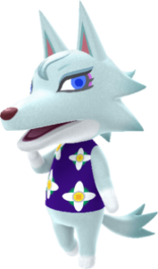
                                <div>늑대 주민</div>
                            </div>
                            <div class="info_part">
                                <h2>비앙카</h2>
                                <div class="date">No.148</div>
                                <div class="long_line"></div>
                                <p>모카 원두와 우유 약간, 설탕 하나를 사용한 커피를 좋아한다.<br/>
                                    선호하는 노래는 아일랜드의 노래.<br/>
                                    화려한 스타일을 좋아하며 스포티한 스타일을 싫어한다.<br/>
                                    좋아하는 색상은 보라색, 말버릇은 멋져.<br/>
                                    좋아하는 말은 누더기를 입어도 마음은 비단.</p>
                                <div class="long_line"></div>
                            </div>
                    </div>
                <div class="clear"></div>
            </div>
        <footer>
            <ul id="i_list">
                <li>
                    
                    
                    
                </li>
            </ul>
        </footer>
    </div>
</body>